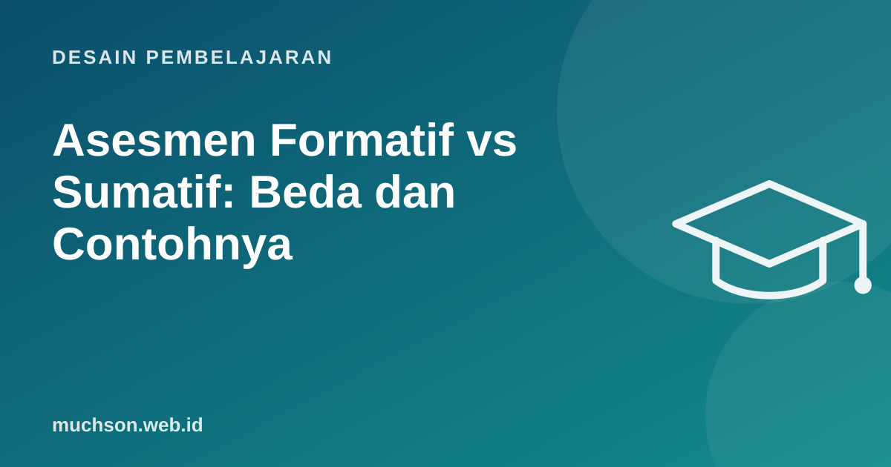

Beranda › Artikel › Desain Pembelajaran
Desain PembelajaranAsesmen Formatif vs Sumatif: Beda dan Contohnya
Robert Stake memberi analogi yang terkenal: ketika juru masak mencicipi sup, itu asesmen formatif; ketika tamu mencicipi sup, itu asesmen sumatif. Yang pertama untuk memperbaiki selagi masih bisa, yang kedua untuk menilai hasil akhir. Keduanya penting, tetapi yang pertama sering dilupakan.

Perbedaan inti
| Aspek | Formatif | Sumatif |
|---|---|---|
| Tujuan | Memperbaiki belajar dan mengajar | Menyimpulkan pencapaian |
| Waktu | Selama proses | Di akhir unit atau program |
| Taruhan | Rendah, sering tanpa nilai | Tinggi, masuk rapor atau sertifikat |
| Siapa yang memakai hasil | Pengajar dan peserta, segera | Lembaga, orang tua, atasan |
| Contoh | Kuis singkat, tiket keluar, draf dengan komentar | Ujian akhir, proyek akhir, sertifikasi |
Satu alat bisa menjadi formatif atau sumatif tergantung cara hasilnya dipakai. Kuis yang hasilnya dipakai untuk menyesuaikan pelajaran besok adalah formatif.
Mengapa formatif begitu penting
Ulasan klasik Black dan Wiliam (1998), "Inside the Black Box", merangkum banyak penelitian dan menyimpulkan bahwa memperkuat praktik asesmen formatif menghasilkan peningkatan belajar yang berarti, terutama bagi peserta yang tertinggal. Kuncinya bukan kuisnya, tetapi tindakan setelahnya.
Delapan teknik formatif yang cepat
Merancang soal formatif yang bermakna
Soal formatif terbaik memunculkan miskonsepsi. Pilihan jawaban yang salah dirancang dari kesalahan umum, sehingga jawaban peserta memberi tahu di mana kesalahpahamannya.
Soal: range(1, 5) menghasilkan...
a) 1, 2, 3, 4, 5 ← mengira batas akhir ikut
b) 1, 2, 3, 4 ← benar
c) 0, 1, 2, 3, 4 ← mengira selalu mulai dari 0
d) 5 ← mengira range satu angka
Bila banyak yang memilih (a), bahas batas akhir range.
Bila banyak yang memilih (c), bahas parameter mulai.Sumatif yang baik juga penting
- Selaraskan dengan tujuan pembelajaran (constructive alignment).
- Ukur kemampuan menerapkan, bukan hanya mengingat.
- Umumkan format dan kriteria sejak awal.
- Gabungkan beberapa bentuk bukti, bukan satu ujian saja.
Tanya jawab
Apakah asesmen formatif harus diberi nilai?
Berapa sering asesmen formatif dilakukan?
Bagaimana di pelatihan korporat?
Sumber dan bacaan lanjut
- Black dan Wiliam (1998): Assessment and Classroom Learning, Assessment in Education
- Rubrik penilaian (artikel terkait)
- Active recall (artikel terkait)